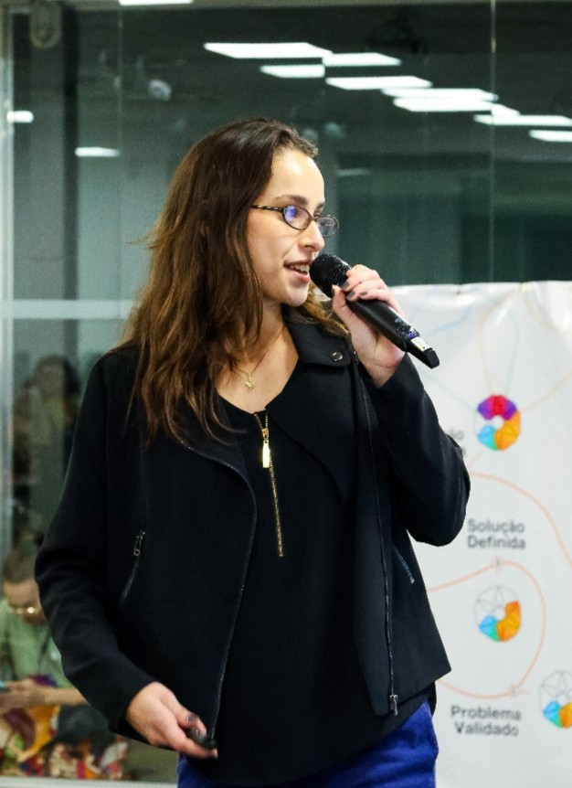

Key Performance Indicators
Applied as Business Automation Consultant at i9 Consultoria.
DATA • AUTOMATION • IMPACT
I am Cecília Zica, an Information Systems student at UFSC, Data Intern at Franq Open Banking, and CNPq researcher focused on analytics, automation, and practical AI.

Currently pursuing a Bachelor's degree in Information Systems at Universidade Federal de Santa Catarina, while working as a Data Intern at Franq Open Banking. My daily routine involves exploring and implementing solutions in Python, SQL, n8n, dbt, and Data Visualization, focusing on process automation and generating business intelligence. I am in a stage of constant learning, discovering the diverse possibilities within the data field.
In parallel, I am a PIBIC/CNPq Researcher, using R for statistical data analysis in the AgroTech sector. My professional foundation includes a background as a Consultant at i9 Consultoria, where I developed a strategic vision of management and business processes.
With international experience in Berlin and France, I bring strong adaptability and intercultural communication skills, always seeking to bridge the technical side of Data Science with solutions that create real impact.
Semester GPA: 9.3
Feb 2026 - Present | Florianópolis, SC
Working with data products and internal analytics solutions using Python, SQL, Looker, n8n, Streamlit, dbt, Tag Manager, web scraping, and web analytics, with emphasis on process automation and BI generation.
Aug 2025 - Present | Hybrid
Contributing to AgroTech research with statistical analysis, time series, optimization, and anomaly detection to improve sensor positioning and operational efficiency.
Sep 2025 - Mar 2026 | Florianópolis, SC
2016 – 2022 | Florianópolis, SC — 6th grade through end of high school
Led sports operations for my class for 6 consecutive years across Colégio Catarinense's renowned Olimpíadas — a traditional multi-sport event with 2,000+ student participants.
2018 – 2021 | Santa Catarina, Brazil
Competed as a setter (levantadora) in the Federação Catarinense de Voleibol. The setter role demands constant communication, strategic thinking, and precise reading of teammates — orchestrating every offensive play while adapting to each attacker's rhythm and form on the day. This experience built resilience, discipline, and real-time decision-making under pressure.
Dec 2019 – Dec 2020 | Berlin, Germany
One-year international study experience in Berlin. Attended Kurt Schwitters Oberschule as part of a high school exchange program, immersed in German culture and language while maintaining full academic studies. Developed deep adaptability, a global perspective, and cross-cultural communication skills.
Apr 2024 – May 2024 | Paris, France
One-month intensive French immersion program in Paris focused on conversation, grammar, and cultural fluency. Full-time classes in small groups with real-life language activities. Enhanced communication skills and adaptability in a multilingual environment.
A visual overview of my journey across professional, research, academic, and sports experiences.
Applied as Business Automation Consultant at i9 Consultoria.
Applied at i9 Consultoria and currently at Franq Open Banking.
Applied as Trainee Consultant at i9 Consultoria.
Applied during Trainee phase at i9 Consultoria.
Applied in CNPq scientific initiation projects at UFSC.
Applied across UFSC research and data workflows in industry.
Applied in multi-source data workflows and validation routines.
Applied in UFSC research and current BI routines with Looker and Streamlit.
Applied as Data Science Researcher (CNPq) at UFSC.
Applied in CNPq research datasets and sensor behavior studies.
Applied in AgroTech statistical studies and model improvement.
Applied in academic, research, and professional environments.
Applied in collaborative software projects and version control.
Developed across UFSC coursework, consulting projects, and research.
Applied in UI/UX decisions across web projects and data visualization.
Built through competitive volleyball, 6 years of sports leadership, and solo international experiences.
Applied across consulting projects, research groups, hackathons, and software teams.
Demonstrated by living and studying in Germany and France, thriving in new environments.
Developed through exchanges in Berlin and Paris, working across languages and cultures.
Applied through pitches at Startup Weekend and Civil Defense Hackathon, and team leadership since 2016.
Applied at i9 Consultoria and Franq, connecting technical solutions to real business impact.
Interactive case studies based on real work I delivered at Franq and CNPq.
In UFSC's Web Programming course, my team and I built a complete hotel management web application with authentication, responsive UI, room selection, booking with shared guest data, and payment simulation.
The frontend was developed with React and the backend with Node.js. More than the final product, this project strengthened our practical understanding of full-stack architecture, teamwork, and software delivery in real scenarios.
Team: João Paulo Decker Oleinik, Nicole Cristina, Vinicius Gessner Anverze, Sofia Damas.
For the Object-Oriented Systems Development course, I built a full Oscar voting system with my teammate João Paulo Decker Oleinik, evolving a console app into an interactive desktop application.
The system supports registration of movies, actors, actresses, and directors, category nominations, voting flows, winner generation, and a user-friendly interface. The biggest learning came from applying MVC architecture in depth, including persistence, exception handling, and maintainable design decisions.
Key takeaway: process quality matters as much as the final result when building scalable software in team environments.
Issued by UFSC & Defesa Civil SC · Oct 2025
Developed a WhatsApp chatbot MVP for crisis management using Python and Twilio. I worked in a hybrid role, building backend automation and delivering the final pitch to expert judges.
Issued by Techstars · Aug 2025
Co-founded “ShouldIGO”, a social platform for travelers. In 54 hours, we validated the business model, designed the prototype, and I delivered the final pitch that secured 2nd place.
Issued by Association Kangourou sans Frontières (AKSF) · Nov 2018
Recognized for high performance in international mathematics competition.
Issued by Colégio Catarinense
Received the “Standout Participant” distinction for leadership, proactivity, and conduct, plus 10+ awards for sports performance and social integration.
Cecília Zica Camargo
Department of Informatics and Statistics (INE)
Universidade Federal de Santa Catarina (UFSC)
Florianópolis, SC - Brazil
Email: zicacamargocecilia@gmail.com